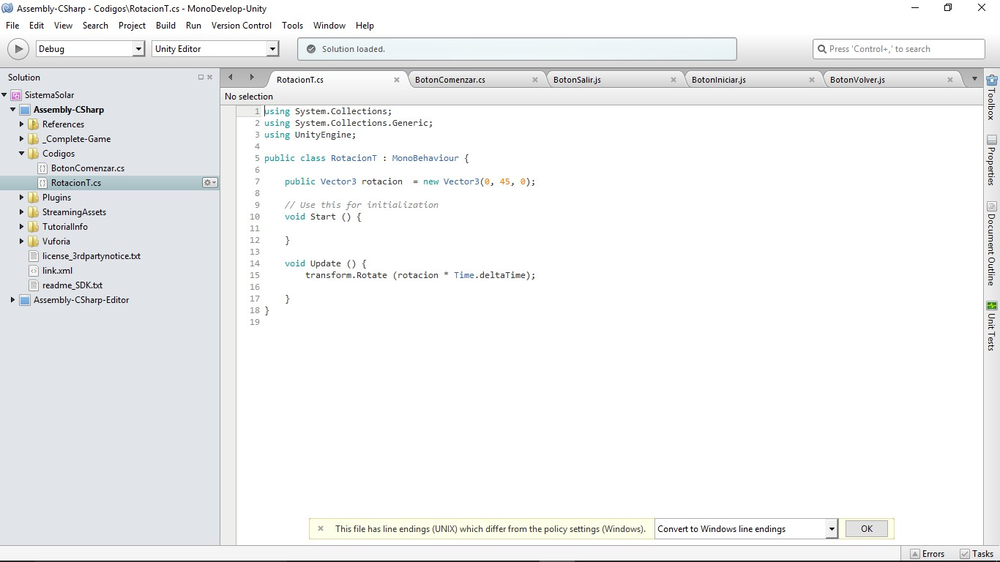
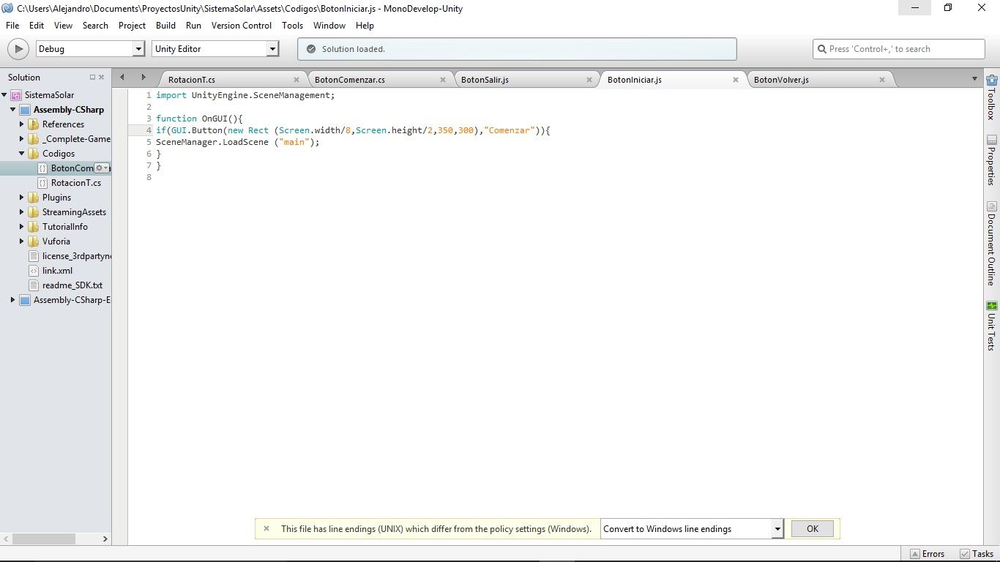

Desarrrollo
Primeramente, comencé con la creación de los 8 planetas, para construir cada uno busque sus respectivas texturas en internet, Una vez obtenidas las texturas cree 8 esferas y una para el sol, en cada una de estas le asigne la textura que le corresponde a cada planeta teniendo en cuenta el tamaño de cada uno, por ejemplo, el sol es el planeta más grande y mucho mayor que todos los demás planetas juntos, respecto a los planetas Júpiter es el más grande me apoye de una tabla que muestra los tamaños de los planetas, también los coloque.
Marco de Trabajo
Se muestran a continuación algunas de las tecnologías usadas en el desarrollo del proyecto.
Tecnologías Usadas:
- Unity:
En Unity para el modelado de los planetas, el sol y el cinturon de asteroides entre las orbitas de Marte y Jupiter, en 3d.
 - MonoDeveloper:
MonoDevelop es un entorno de desarrollo integrado libre y gratuito, Los scripts que se utilizaron para el comportamiento de los objetos se escribieron en el lenguaje C#, utilizando la herramienta que Unity trae predeterminada Monodevelop, usando el lenguaje C#.
 - Vufuria:
Para realizarlo en realidad aumentada utilice Vufuria registrándose a la página y realizando una serie de pasos que omito para no hacer más largo esta descripción ya teniendo instalado el paquete en Unity, utilice dos prefabs que vienen al descargar el paquete de Vufuria la ARcamara y ImageTarget.#
Ejemplo de Código
Para la rotación de los planetas se desarrolló el siguiente script. De este como se puede observar primero inicie una variable de tipo Vector 3 llamada rotación, con esta variable lo que consigo es cuánto debe de rotar en los vectores X, Y y Z.
using System.Collections;
using System.Collections.Generic;
using UnityEngine;
public class RotacionT : MonoBehavier {
public Vector3 rotacion = new Vector3(0, 45, 0);
void start(){}
void Update() {
transform.Rotate (Rotacion * Time.deltaTime);
}
Video de Ejemplo
En el siguiente video se muestra un ejemplo de la aplicación en funcionamiento.